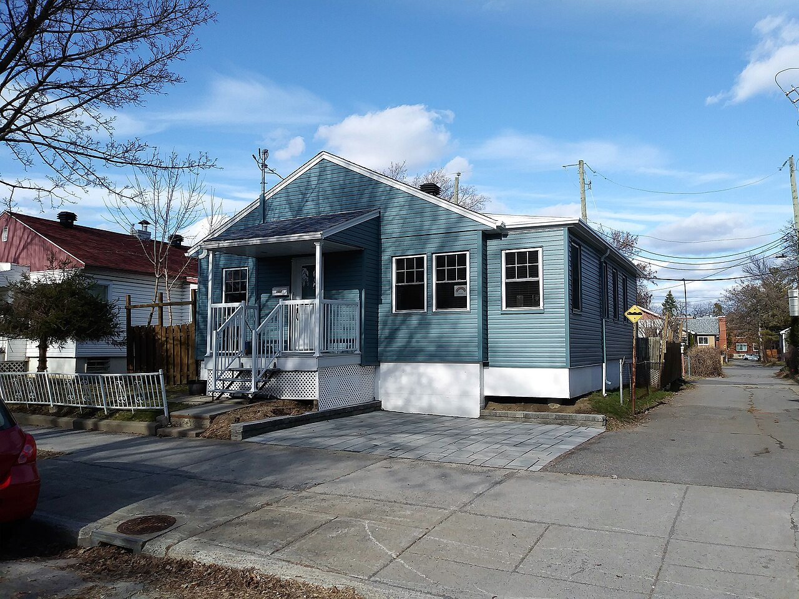

| Place | Local name | Phase years | Storeys | Roof | Window | Cladding | Garage |
|---|---|---|---|---|---|---|---|
| Lévis | Wartime housing dwelling Wartime housing | 1940 – 1975 | 1.5 | gabled | – | asbestos-cement-tile, aluminium-clapboard, masonite-clapboard | – |
| Mercier–Hochelaga-Maisonneuve (borough of Montréal) | Veterans' house, to the Wartime Housing Limited model La maison de vétérans | 1945 – 1976 | 1.5 | gabled | vertical | wood-clapboard, clay-brick | none |
| Québec City | Wartime Housing house (Cape Cod) Wartime housing | 1920 – 1970 | 1–1.5 | gabled | vertical | clay-brick, asbestos-cement-shingle, wood-clapboard | – |
| Le Sud-Ouest (Montréal) | Veterans' house La maison de vétérans | 1945 – 2013 | 1 | gabled-or-hipped | horizontal | wood-clapboard, clay-brick, artificial-stone, metal-siding | none |
| Verdun (borough of Montréal) | National Housing Act house — 1½ storeys, brick, to prize-winning plans L'habitation unifamiliale de masse « National Housing Act » | 1930 – 1950 | 1.5 | gabled | – | clay-brick | none |
| Villeray–Saint-Michel–Parc-Extension | Post-war house Maison d'après-guerre | 1940 – 1960 | 1 | gabled | vertical | clay-brick, stone, wood-clapboard | detached-or-set-back |
| Villeray–Saint-Michel–Parc-Extension | Post-war semi-detached house Jumelé d'après-guerre | 1940 – 1960 | 2 | hipped | horizontal | clay-brick, stone | detached-or-set-back |
